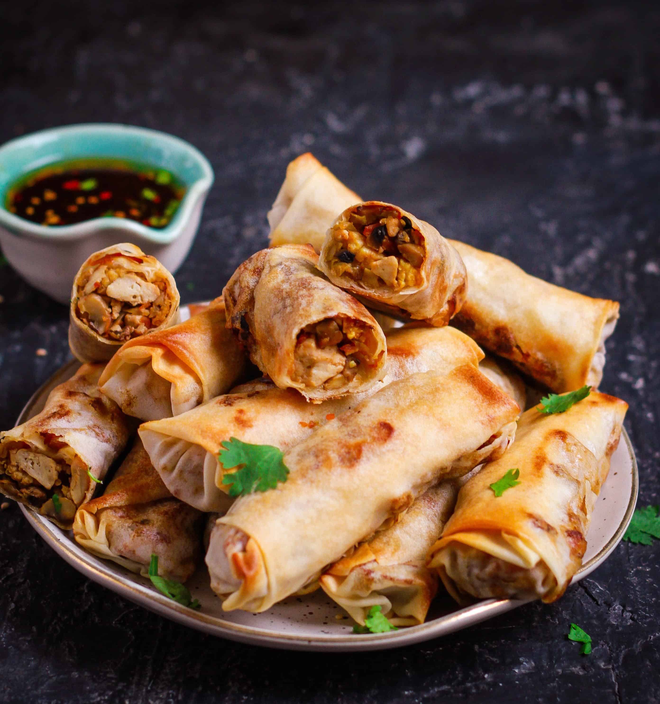

Vegetable Spring Rolls

Ingredients:
- Spring roll wrappers
- 1 cup cabbage, thinly sliced
- 1/2 cup carrots, julienne
- 1/2 cup bell peppers, thinly sliced
- 1/2 cup bean sprouts
- 2 tablespoons soy sauce
- 1 teaspoon ginger, minced
- 1 teaspoon garlic, minced
- 1 tablespoon vegetable oil
- Salt and pepper to taste
Directions:
- Heat vegetable oil in a pan. Sauté ginger and garlic until fragrant.
- Add cabbage, carrots, bell peppers, and bean sprouts. Cook until vegetables are slightly tender.
- Drizzle soy sauce over the vegetables and season with salt and pepper. Mix well.
- Place a spring roll wrapper on a clean surface. Add a spoonful of the vegetable mixture in the center.
- Fold the sides of the wrapper over the filling, then roll tightly from the bottom.
- Seal the edge with a bit of water.
- Repeat with the remaining wrappers and filling.
- Heat oil in a pan for frying. Fry the spring rolls until golden brown and crispy.
- Drain excess oil on a paper towel.
- Serve hot with dipping sauce of your choice.